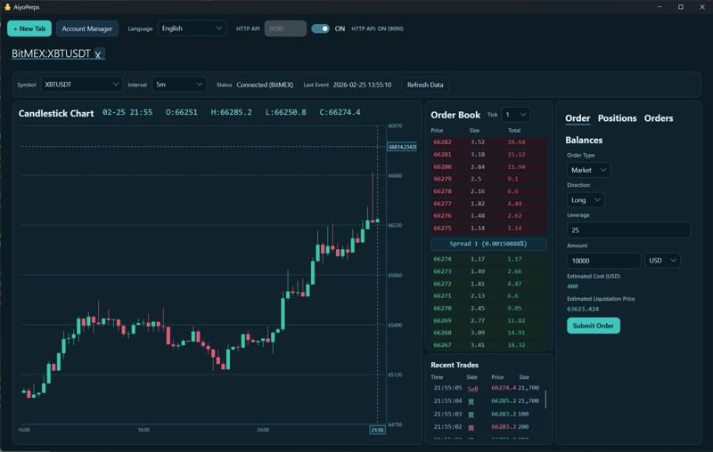
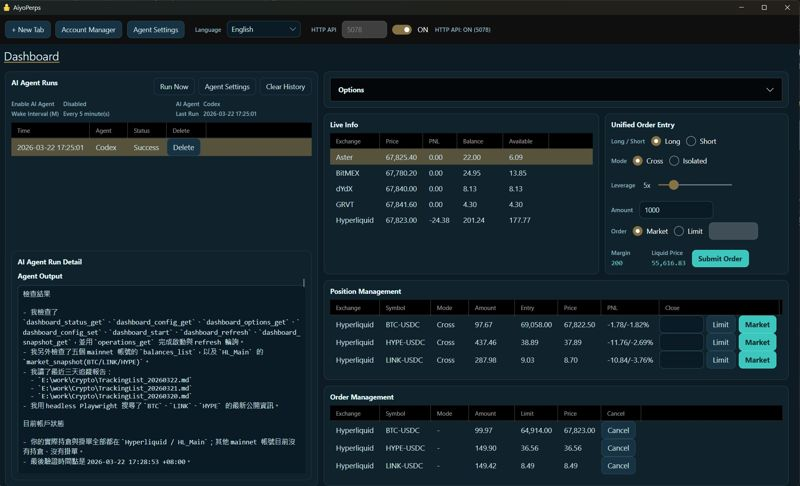
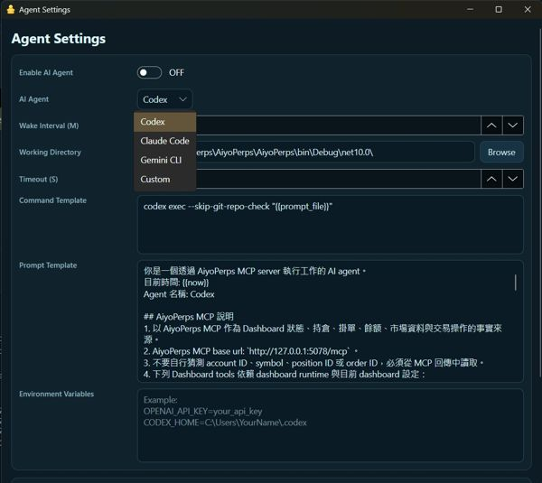

Full desktop workspace
A tab-based workflow with charting, order book, order entry, and account views for traders who still want speed and control.
AiyoPerps gives crypto perps teams three working modes in one product: manual execution, AI-assisted operation, and autonomous agent workflows powered by MCP and a local API surface.
npx -y @phidiassj/aiyoperps-mcp-installer
AiyoPerps.exe -- headless --port 5078
http://127.0.0.1:5078/mcp
The website is optimized around launch priorities: product clarity, search visibility, and clean paths into GitHub, releases, and docs.
A tab-based workflow with charting, order book, order entry, and account views for traders who still want speed and control.
Connect Codex, Claude, Gemini, and other compatible agents so AI can inspect context, collaborate on execution, or operate under guardrails.
Use the local HTTP API for scripts, tooling, internal dashboards, and custom automation without forcing everything through chat.
Run AiyoPerps without the GUI when you only need the local service layer, ideal for automation boxes and API-driven setups.
The current documentation lists BitMEX, Hyperliquid, Aster, Grvt, and dYdX, covering practical CEX and DEX perps scenarios.
Recent updates add time-based AI agent wake-up, making recurring checks and semi-automated trading workflows realistic.
The structure mirrors the official README so visitors can move straight into setup instead of hunting for instructions.
Download the latest release from GitHub, then run `AiyoPerps.exe` on Windows or the Linux executable on supported environments.
Set the HTTP API port in the toolbar and switch it on. That exposes both the OpenAPI UI and the MCP endpoint.
Use `@phidiassj/aiyoperps-mcp-installer` for auto-registration or the stdio bridge when you need a manual integration path.
Start with `-- headless --port 5078`, or deploy through Docker for macOS-oriented usage.
Existing product screenshots make the maturity of the app obvious and give potential users confidence that the stack already exists.

The desktop workspace is built around fast decision making, direct execution, and visible context.

Manage positions and open orders across exchanges from a unified surface.

A clear signal that the product is evolving into an operational automation layer.
Manual traders, developer-operators, and teams experimenting with agent-assisted or agent-driven perps workflows.
Yes. The headless mode exposes the local REST and MCP surfaces without requiring the desktop shell.
No. Current docs mention Codex CLI, Claude Code CLI, and Gemini CLI among supported agent workflows.